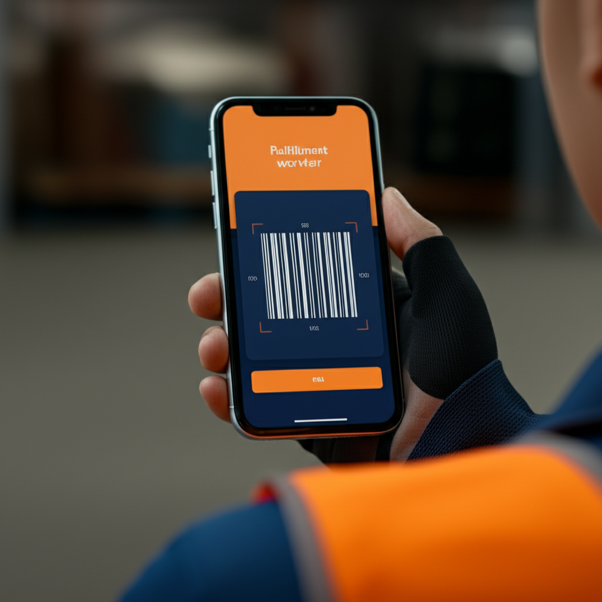
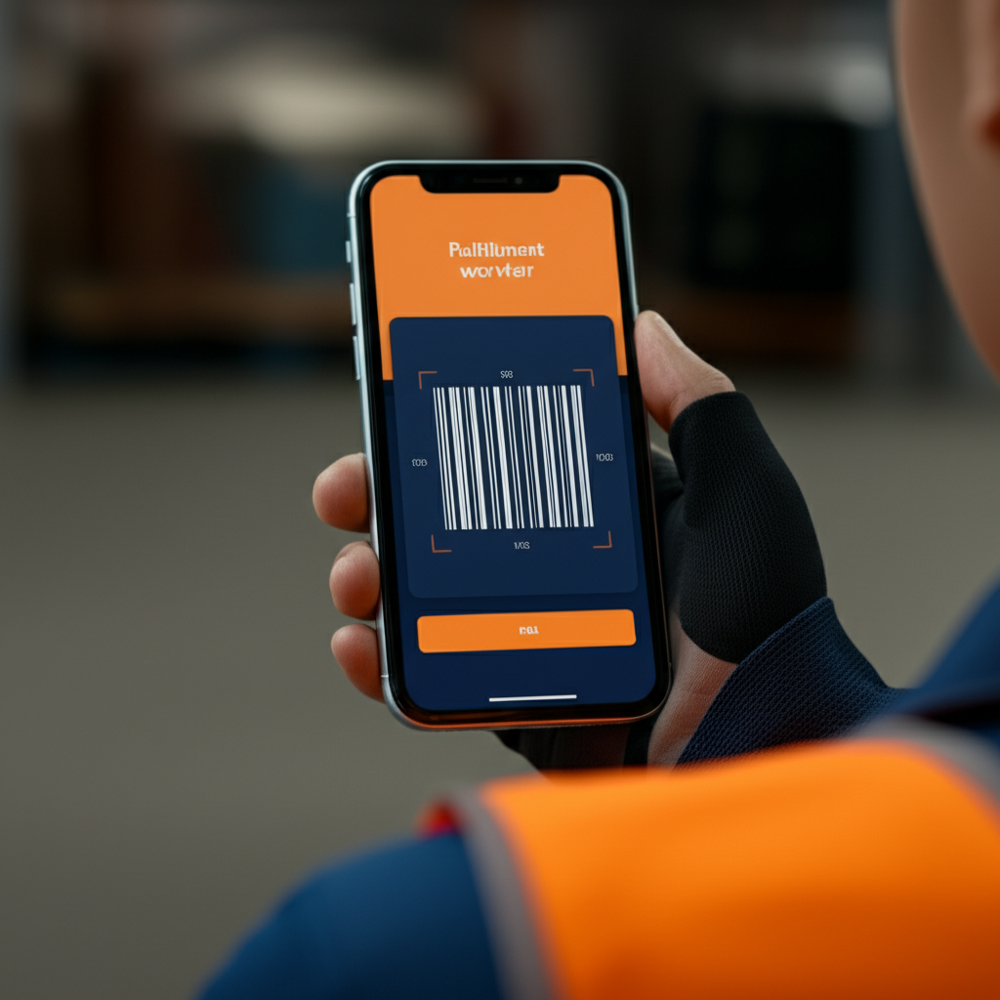

Research

Understanding Three User Groups
Through 38 interviews and 3 FC shadow sessions, we identified distinct pain points across user groups:
DA
Daniela Alvarez
FC Associate, 3 years
Works 10-hour picking shifts at robotics-enabled FCs. Uses handheld scanners constantly.
"The screen times out while I'm reading instructions. I have to re-scan the item just to see the next step."
RP
Raj Patel
FBA Seller, $8M revenue
Manages 2,400 SKUs across 6 warehouses. Checks inventory 4-5 times daily.
"Seller Central shows my inventory was last updated 6 hours ago. I need real-time data to make buying decisions."
KC
Keisha Chen
Operations Manager, 8 years
Oversees 240 associates across 3 shifts. Spends 12+ hours/week on reporting.
"I'm stitching together data from four different dashboards to build one weekly report. It's pure manual labor."
 
